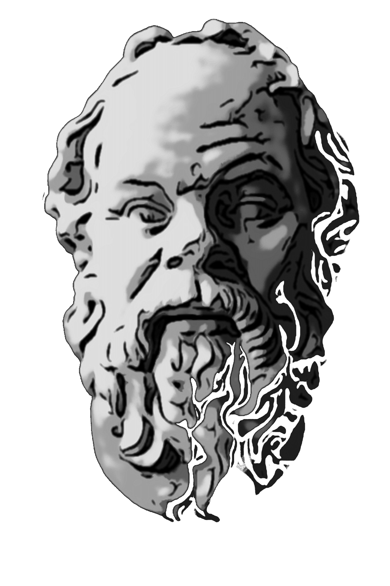

Tool
- 
Socrates is an tool to generate automated test oracles for Cyber Physical System models https://claudiomenghi.github.io/SOCRaTEs/
PSALM is a Pattern bAsed MIssion Specifier. It allows to create complex robotic missions using on a set of mission specification patterns https://claudiomenghi.github.io/PsAlM/ Patterns are available on a dedicated website http://roboticpatterns.com
COVER is a unified framework that supports the interplay between requirements analysts and software developers. It contracts a bridge between the requirements analyst’s and the software developer’s artifacts by enabling goal model analysis during software design. The goal model produced by the requirements analyst is kept alive and updated while the system is designed. Whenever the design of the system changes, COVER verifies the new design against the requirements of interest. The verification results are used to trigger a goal model analysis procedure. The results of this analysis can be used by the requirements analyst and the software developer to update the goal model or the design of the system. Additional information on cover can be found at https://claudiomenghi.github.io/COVER/
CHIA (CHecker for Incomplete Automata), is a tool supporting the developer in iterative development of system models given as state machines and properties of interest expressed in temporal logic. Some states (called black box states) are placeholders that represent functionalities whose design is delayed to a later stage. They shall be eventually replaced by a state machine model in a refinement step. Additional information on cover can be found at https://github.com/claudiomenghi/CHIA